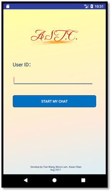
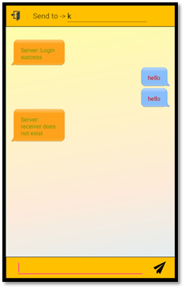
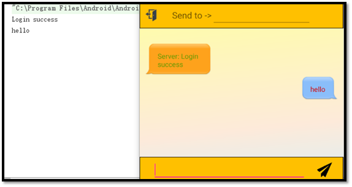

The result of our project will be shown in this chapter. The content will be organized as follows: a start page (Figure 1), single chat page (Figure 2) and broadcast page (Figure 3).
Figure 1 Start page
Figure 2 Single Chat room
Figure 3 broadcast page